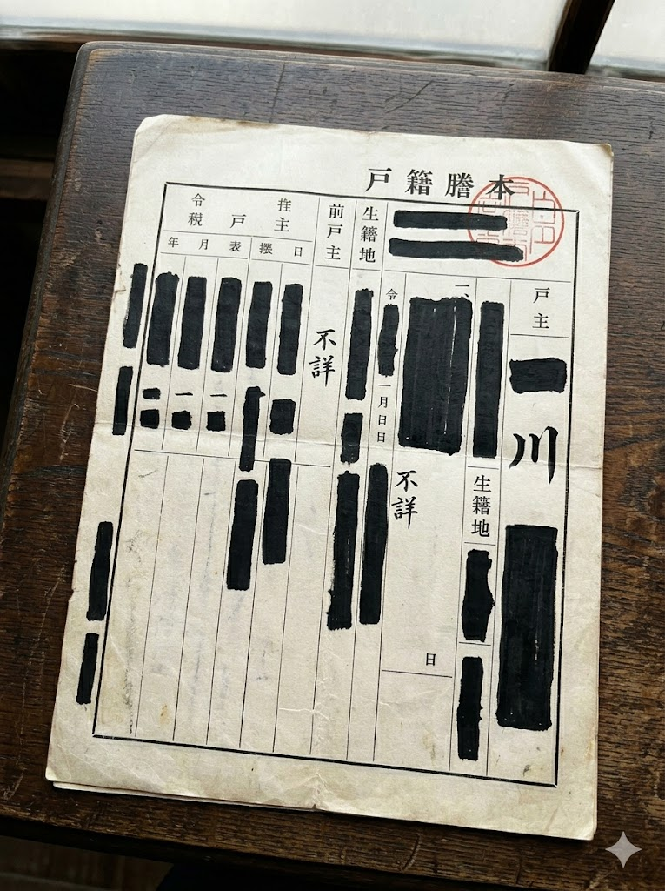

蛸川小蘭は、1949年にタイムスリップした。
T湯の宿で「蛸川」と名乗った。その苗字が宿の孫娘に伝わり、子孫に受け継がれた。その子孫が、現代の蛸川小蘭だ。
つまり小蘭は、自分自身の祖先だ。
「蛸川」という苗字には外部からの起源がない。タコのぬいぐるみへのこだわりも、相馬のタコへの記憶も、すべて小蘭が作り出したものだ。
小蘭は、どの時代の人間でもない。ループの中にしか存在しない。
だから、猫塚清治の記録が届かなければ、小蘭は存在しなかった。
そして、あなたがこれを読んでいるということは——████記録は届いた。